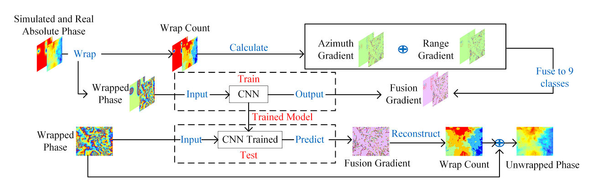
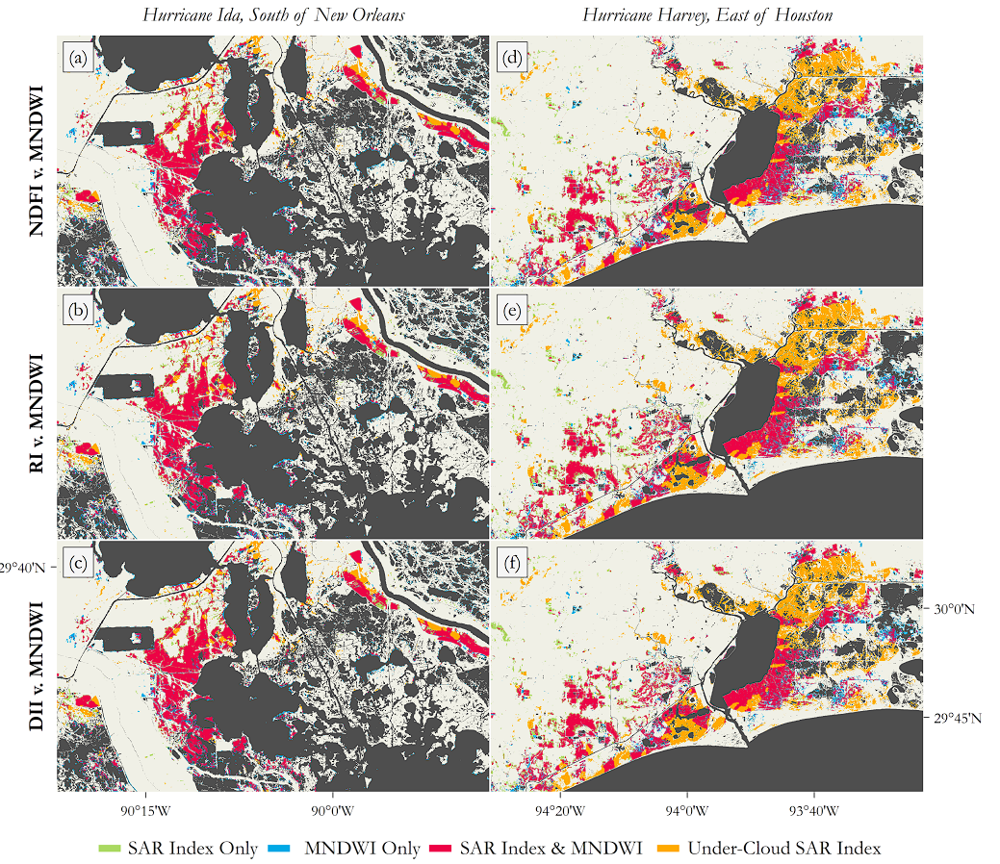

8 Synthetic Aperature Radar
8.1 Synthetic Aperture Radar (SAR)
This final week of remote sensing covers more in-depth knowledge about SAR, especially its application in change detection. As mentioned in week 1, SAR is a type of active sensor which sends out radar signal and measures its return signal, also known as back-scattering.
Some of the features of SAR include:
Due to its long wavelength, different bands of SAR can penetrate through different mediums and therefore clouds is not a big issue as opposed to optical imaging. L-band signal for example, with a wavelength of about 23cm, can penetrate through a tree canopy and hence often used for ground monitoring.
Surface Texture data is also available from measuring the backscatter - smooth surfaces result in small backscatter but rough surfaces scatter the signal in multiple directions, resulting in higher backscattering.
- This can also be determined by how SAR sends and receive signals in different polarisation (HH, HV, VV and VH). The different polarisation are sensitive to different types of surfaces, giving rise to perceived surface textures like bare earth, vegetation and water.
The spatial resolution of radar data is related to the ratio of sensor wavelength to the radio antenna length. In simple terms, the longer the antenna, the higher the spatial resolution. Scientists developed the technique “synthetic aperture” which combines periodic electromagnetic signals into a virtual aperture that is much longer than the antenna width required.
SAR sensors can also detect phase change - used to detect small ground movements; this is known as interferogram or InSAR
- Its original purpose is to obtain the surface elevation through different of two different InSAR images, but the field has broadened to new methods and techniques like D-InSAR and Small Baseline Subset (SBAS) InSAR. These methods are used in measuring ground displacement, natural disasters and most recently, effects of climate change like land subsidence and glacier movements over a large area which traditional geological surveys struggle to carry out.
In my opinion, the high precision and resolution coverage of a large area is perhaps SAR’s biggest strength which made research into minute changes in landscape possible. Its weaknesses are seemingly being overcome with the advent of big data and deep learning which can correct errors in phase unwrapping and deformation (Li et al., 2022).

These SAR techniques would also have to evolve with the launch of more advanced SAR satellites capable of multi-polarisation, mutli-channel and multi-mode while current methods rely on singular polarisation data. It would be interesting to see how SAR technology will change in the future and how it can be combined with other technologies to develop new tools of measuring and analysing large scale phenomenons.
8.2 Applications
Despite the strengths of SAR data which triumphs optical imagery due to its weather penetrating characteristic making it suitable for high-resolution, and near real-time change detection applications, the use of SAR data is not perfect. SAR images suffer from speckle noise caused by interference between different scatterers within a resolution cell. Layover and shadowing can also distort SAR imagery leading to misclassification of surface features like water or urban areas (Choi et al. 2022). Researchers has therefore tried to use multi-source remote sensing data to help validate SAR change detection.
For example, Hamidi et al. (2023) leveraged on both optical and SAR imagery to generate near real-time flood delineation maps for Hurricane Ida and Harvey. The flooded areas detected by SAR image changes were validated against multi-spectral imagery along with additional post processing like smoothing to reduce the speckle effect. This novel workflow hosted on Google Earth Engine is designed to overcome limitations of SAR imagery being susceptible to wind and heavy rain which can influence surface roughness of water, leading to incorrect flood identification. The research showed agreement percentages of 78-80% between SAR and optical imagery despite cloud interference for optical imagery, and proved to be a useful way to validate flood extent maps.

In the research, the multi-source remote sensing method truly shines in its disaster relief applications: while SAR data may miss some flood areas due to surface roughness interference from wind/heavy rain or being hidden under thick vegetation/built up areas (which causes issues with double-bounce backscattering), optical imagery can make up for missed areas since it is better to overestimate flooded areas than underestimate them (error of omission vs error of commision). This is also complemented by the capabilities of GEE which is able to run the script quickly to generate near real-time flood maps which is critical for disaster response and rescue efforts.
8.3 Reflections
This week covers a seperate type of sensor that works fundamentally differently compared to the optical imagery and its associated methods covered in the past few weeks. I was left a bit confused - does this mean that the methods covered in previous weeks like supervised/unsupervised classification, sub-pixel analysis does not apply to SAR data since they are used for multi-spectral imagery? As I researched further, I realised that classification techniques can indeed be used on SAR data, but it is challenging because of the inherent speckle noise, often resulting in lower classification accuracy than optical remote sensing data (Mahdavi et a. 2017). However, many studies still use classification techniques on SAR data along with optical data because SAR data has a high revisit frequency and all-weather capturing ability, which is valuable for monitoring changes across time (Zhao et al. 2020).
My key understanding is that while some methods like classification is common through all types of remote sensing images, there are methods/processes specific to the characteristic of the data; for example an entire body of research dedicated to SAR data processing such as despeckling and unravelling deformation.
The introduction of high resolution SAR also does not take away the importance and capabilities of multi-spectral data; Thermal studies like urban heat island and air pollution studies can only be carried out through multispectral sensors. For now, SAR applications are seemingly limited to land mapping (LULC, forest monitoring etc), parameter retrieval (soil moisture etc) or object detection (ships, aircrafts etc) (Tsokas et al., 2022). I am excited to see what future applications of SAR could be - especially with the use of multi-polarisation SAR data, we might be able to better understand the scattering mechanisms across different materials. This will potentially open up new frontiers in new fields or disciplines such as archaeology, ethology (study of animal behaviour), or even wider aspects of climate change such as ocean health.
8.4 References
Choi, J.H., Lee, M.J., Jeong, N.H., Lee, G. and Kim, K.T., 2022. Fusion of target and shadow regions for improved SAR ATR. IEEE Transactions on Geoscience and Remote Sensing, 60, pp.1-17.
Hamidi, E., Peter, B.G., Muñoz, D.F., Moftakhari, H. and Moradkhani, H., 2023. Fast flood extent monitoring with SAR change detection using google earth engine. IEEE Transactions on Geoscience and Remote Sensing, 61, pp.1-19.
Mahdavi, S., Maghsoudi, Y. and Amani, M., 2017. Effects of changing environmental conditions on synthetic aperture radar backscattering coefficient, scattering mechanisms, and class separability in a forest area. Journal of Applied Remote Sensing, 11(3), pp.036015-036015.
Li, S., Xu, W. and Li, Z., 2022. Review of the SBAS InSAR Time-series algorithms, applications, and challenges. Geodesy and Geodynamics, 13(2), pp.114-126.
Li, L., Zhang, H., Tang, Y., Wang, C. and Gu, F., 2021. InSAR phase unwrapping by deep learning based on gradient information fusion. IEEE Geoscience and Remote Sensing Letters, 19, pp.1-5.
Tsokas, A., Rysz, M., Pardalos, P.M. and Dipple, K., 2022. SAR data applications in earth observation: An overview. Expert Systems with Applications, 205, p.117342.
Zhao, W., Qu, Y., Chen, J. and Yuan, Z., 2020. Deeply synergistic optical and SAR time series for crop dynamic monitoring. Remote Sensing of Environment, 247, p.111952.